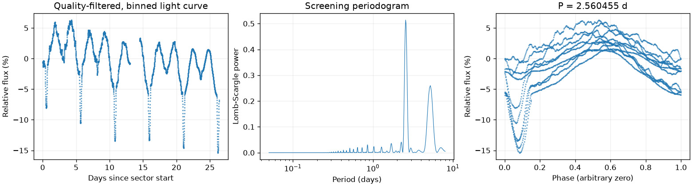
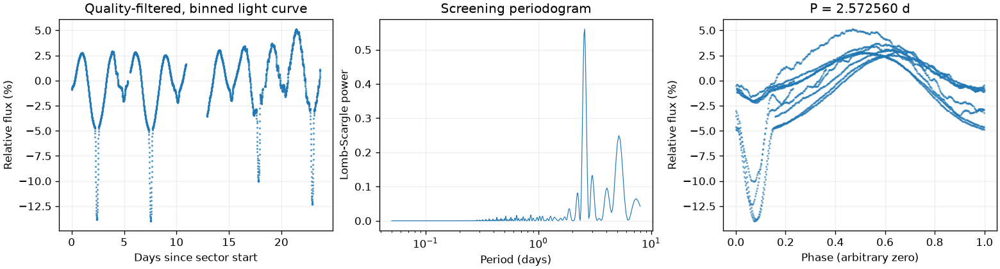
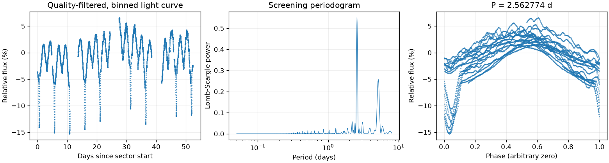
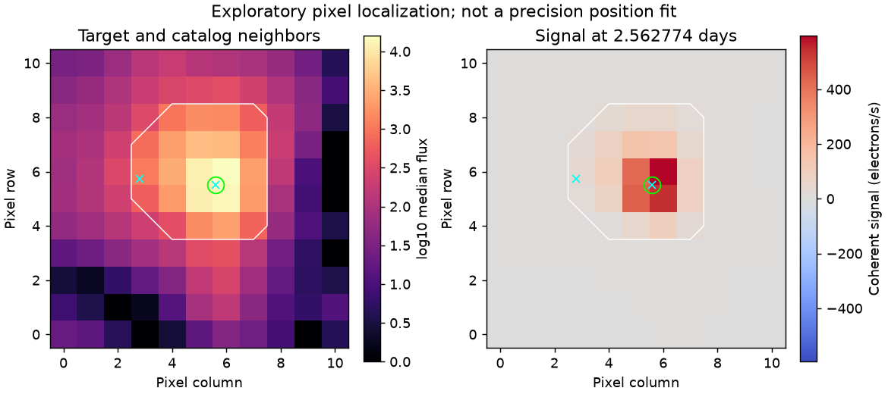

Sector 2 · LS 2.560455 天
BLS 辅助周期：5.138233 天
两种搜索相差约两倍，存在半周期或双周期歧义，需要复核。
前半段 LS：2.541960 天；后半段 LS：2.575559 天。
相对幅度估计 9.8389% · 有效点数 17578

Screening peak only; no correlated-noise false-alarm calibration or physical classification.
这是筛选报告，未确认新发现，也不能代替 VSX 提交材料。
图中依次为亮度随时间变化、候选周期强度和折叠后的重复形状。相位零点仅供展示；纵轴是相对通量，不是标定星等。
BLS 辅助周期：5.138233 天
两种搜索相差约两倍，存在半周期或双周期歧义，需要复核。
前半段 LS：2.541960 天；后半段 LS：2.575559 天。
相对幅度估计 9.8389% · 有效点数 17578

Screening peak only; no correlated-noise false-alarm calibration or physical classification.
BLS 辅助周期：5.138233 天
两种搜索相差约两倍，存在半周期或双周期歧义，需要复核。
前半段 LS：2.570514 天；后半段 LS：2.558577 天。
相对幅度估计 6.0328% · 有效点数 15251

Screening peak only; no correlated-noise false-alarm calibration or physical classification.
BLS 辅助周期：5.138233 天
两种搜索相差约两倍，存在半周期或双周期歧义，需要复核。
前半段 LS：2.556123 天；后半段 LS：2.555207 天。
相对幅度估计 9.4384% · 有效点数 30151

Screening peak only; no correlated-noise false-alarm calibration or physical classification.

像素峰值诊断不能替代精细来源拟合或正式查找星图。
{
"ra_deg": 114.105217315086,
"dec_deg": -61.8738521768167,
"catalog_queries": [
{
"source": "VSX",
"checked_at": "2026-11-10T08:52:00.369134+00:00",
"url": "https://vsx.aavso.org/index.php",
"query": {
"params": {
"view": "api.list",
"ra": 114.105217315086,
"dec": -61.8738521768167,
"radius": 0.04,
"format": "json"
}
},
"status": "completed",
"match_count": 2,
"note": "VSX neighborhood only; no-match is not novelty confirmation."
},
{
"source": "SIMBAD/VizieR/ADS",
"status": "not_run",
"note": "Requires detailed catalog/literature review; VSX alone is insufficient."
}
],
"vsx_neighbors": [
{
"Name": "Gaia DR3 5289291399423836928",
"RA2000": "114.10495",
"Declination2000": "-61.88956",
"ProperMotionRA": "-30.5610",
"ProperMotionDec": "30.6540",
"VariabilityType": "VAR",
"Period": "0.0381305",
"MaxMag": "17.44 G",
"MinMag": "17.76 G",
"Discoverer": "Gaia collaboration",
"Category": "Variable",
"OID": "10321619",
"Constellation": "Car",
"sep_arcsec": 56.54998223644672
},
{
"Name": "V0455 Car",
"AUID": "000-BDJ-459",
"RA2000": "114.10521",
"Declination2000": "-61.87386",
"ProperMotionRA": "-6.9000",
"ProperMotionDec": "10.8300",
"VariabilityType": "EA",
"Period": "5.132888",
"Epoch": "2451907.708",
"EclipseDuration": "8",
"MaxMag": "8.3 V",
"MinMag": "8.53 V",
"SpectralType": "B5/B6IV",
"Category": "Variable",
"OID": "6208",
"Constellation": "Car",
"sep_arcsec": 0.03077819174809991
}
],
"notes": [],
"errors": [],
"repeatability": {
"status": "approximately_repeated",
"fractional_spread": 0.004723394535255861,
"tolerance": 0.05,
"note": "Heuristic screening comparison, not period-error or long-term phase-coherence validation."
},
"localization": {
"status": "consistent_with_target",
"target_pixel": [
5.589068482578046,
5.500937207171052
],
"peak_pixel": [
6,
6
],
"target_peak_distance_pixels": 0.6464738070463015,
"neighbors": [
{
"name": "Gaia DR3 5289291399423836928",
"x": 2.808077025495387,
"y": 5.7265872911059965,
"distance_from_peak_pixels": 3.2036115221036296,
"period_d": 0.0381305,
"period_harmonic_fractional_error": 32.60530777383528
},
{
"name": "V0455 Car",
"x": 5.587704124833816,
"y": 5.501659474626311,
"distance_from_peak_pixels": 0.6467852564095554,
"period_d": 5.132888,
"period_harmonic_fractional_error": 0.001429847625566083
}
],
"possible_contaminant": null,
"limitations": "Heuristic peak/harmonic matching; no PRF fit, localization uncertainty or correlated-noise significance. This is not a submission finding chart.",
"plot": "results/349907707/pixels.png",
"plot_sha256": "f6843cfbebf06415614227a0859d94bc8afbb9549527e866469996c96debbe43",
"pixel_input": {
"uri": "mast:TESS/product/tess2025258001959-s0097-0000000349907707-0294-s_tp.fits",
"sha256": "2f74329b051f0acb10f335beb120a2093512e3e6caaf10648fa6d34af7beb1da"
}
},
"submission": {
"name": null,
"ra_deg": null,
"dec_deg": null,
"coordinate_source": null,
"coordinate_epoch": null,
"variability_type": null,
"period_days": null,
"period_error_days": null,
"epoch": null,
"epoch_time_standard": null,
"epoch_event": null,
"max_magnitude": null,
"min_magnitude": null,
"passband": null,
"magnitude_source": null,
"mean_magnitude": null,
"amplitude_magnitude": null,
"amplitude_passband": null,
"discoverers": null,
"references": null
}
}